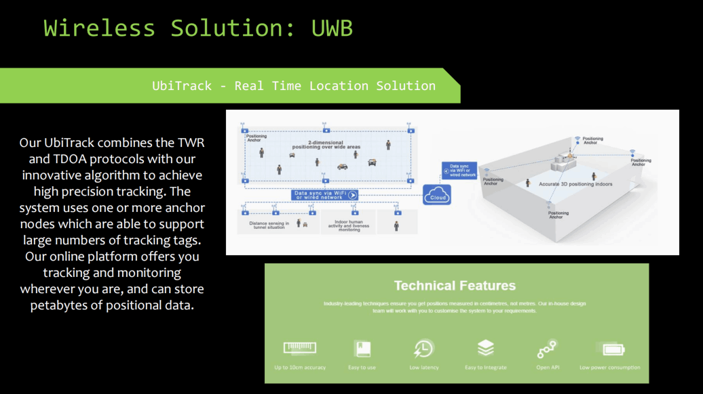
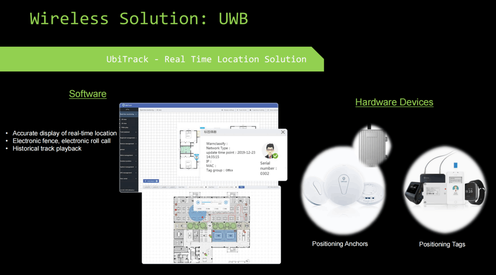

HTML Maker
A UWB solution refers to the combination of hardware and software that implements Ultra-Wideband (UWB) technology, a short-range wireless communication standard using extremely short, low-power radio pulses over a wide range of frequencies. These solutions enable highly accurate, real-time location tracking and precise ranging of devices, as well as high-bandwidth, low-power data transfer.
UWB 解决方案是指实现超宽带 (UWB) 技术的硬件和软件组合。UWB 是一种短距离无线通信标准，使用极短、低功率的无线电脉冲，覆盖广泛的频率范围。这些解决方案能够实现高精度、实时的位置跟踪和精确的设备测距，以及高带宽、低功耗的数据传输。


UWB transmitters send billions of extremely short radio pulses (nanosecond).
超宽带发射机发送数十亿个极短的无线电脉冲（纳秒）。
These short pulses spread energy across a very wide frequency spectrum, allowing for a high bandwidth and precise timing.
这些短脉冲将能量分散到一个非常宽的频谱中，从而允许高带宽和精确的定时。
The receiver can calculate the distance to the transmitter by precisely measuring the time it takes for the pulses to arrive.
接收器可通过精确测量脉冲到达所需的时间来计算到发射器的距离。
This enables two-way communication, allowing devices to exchange data and determine each other's precise location.
这使得双向通信成为可能，允许设备交换数据并确定彼此的精确位置。
High accuracy:
UWB offers superior accuracy in location and distance measurement compared to other wireless technologies like Bluetooth or Wi-Fi.
高精度：
与蓝牙或 Wi-Fi 等其他无线技术相比，UWB 在位置和距离测量方面具有卓越的精度。
Secure communication:
It supports secure, confidential communication, which is crucial for applications like digital car keys.
安全通信：
它支持安全、保密的通信，这对于数字车钥匙等应用至关重要。
Low power consumption:
The low-power pulses are non-destructive and don't interfere with other wireless signals.
低功耗：
低功耗脉冲具有非破坏性，不会干扰其他无线信号。
Real-time tracking:
UWB solutions provide precise real-time location and motion sensing.
实时追踪：
UWB 解决方案提供精确的实时定位和运动感应。
HTML Maker